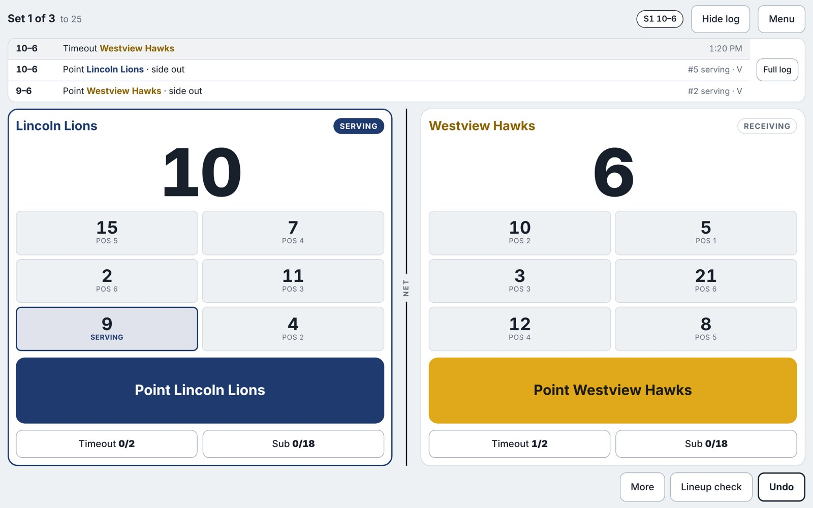
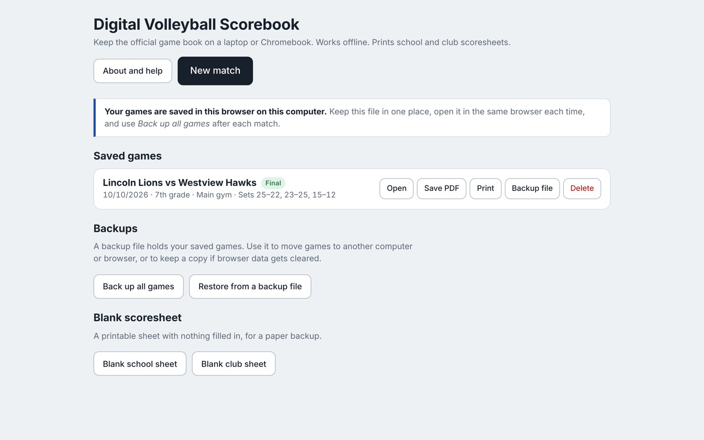
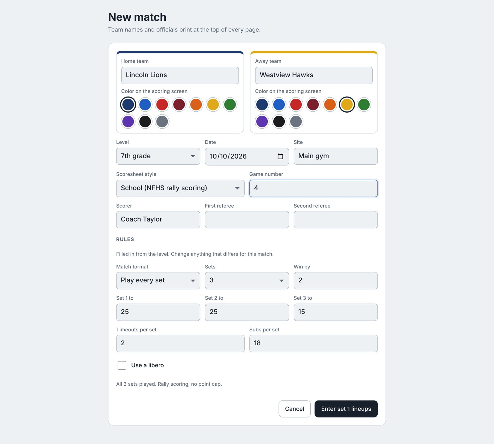
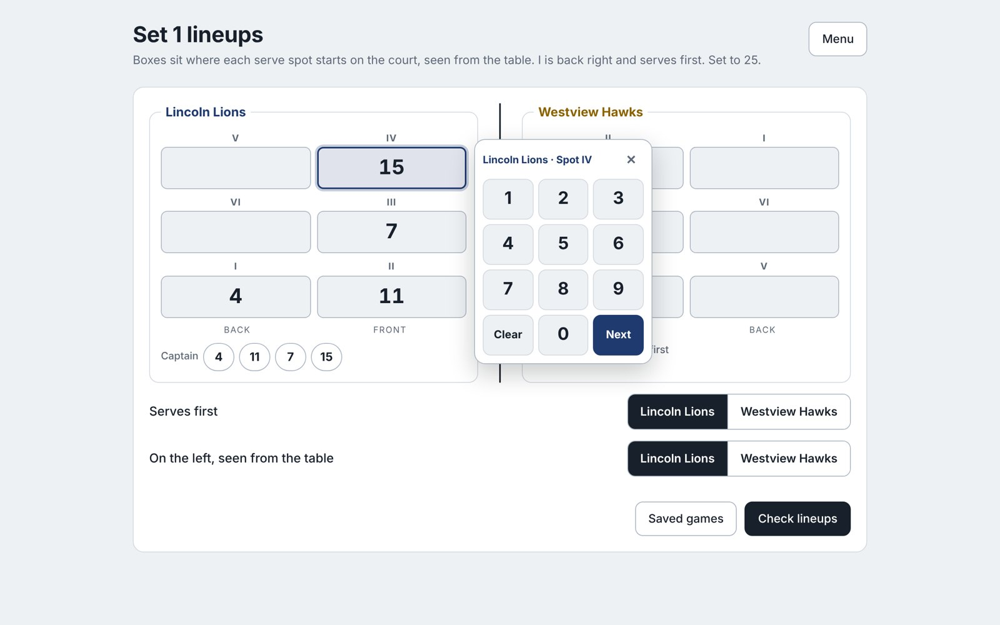
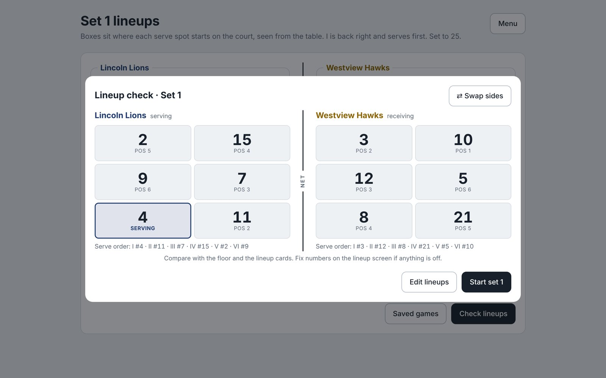
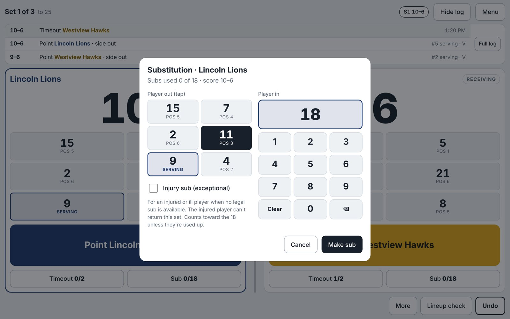
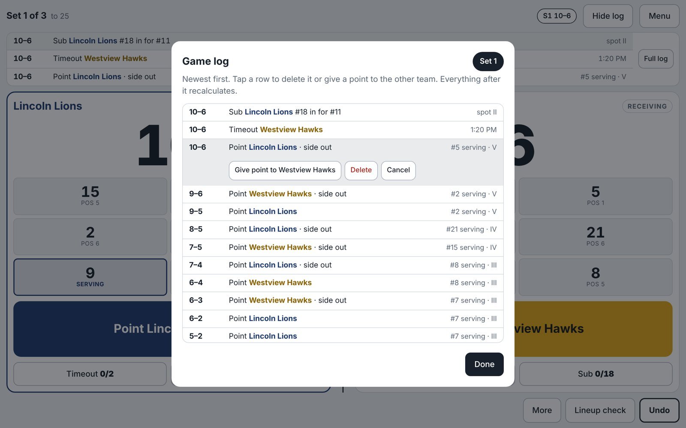
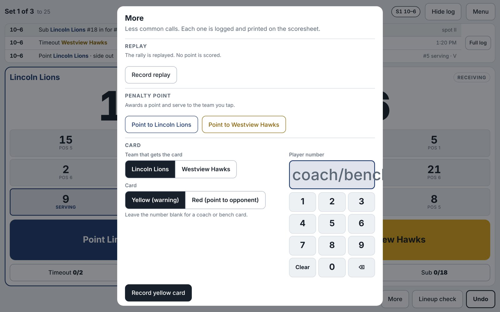
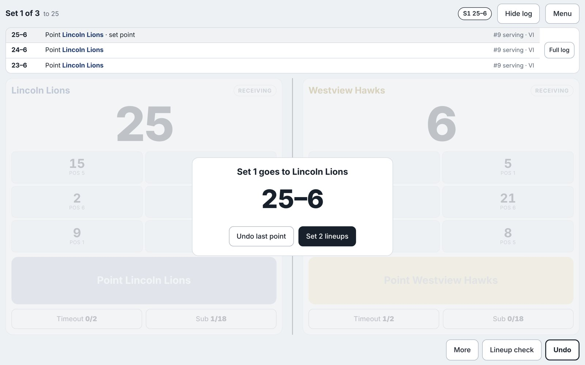
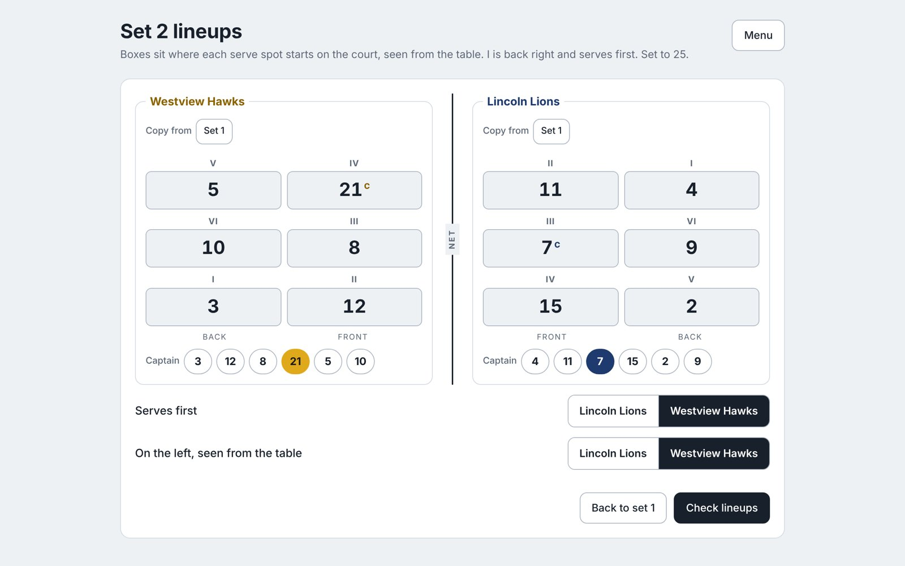

The whole scorebook is one file. There's nothing to install and no account to make.

The home screen lists your saved games. From here you can open a match, save or print its PDF, and make backups.
Tap New match. Everything you enter here prints at the top of the scoresheet.
Type both team names and pick a color for each. The colors only change the scoring screen, so it's easy to tell the sides apart at a glance. The printed sheet stays black and white.
Pick a level from 4th grade through college. The level fills in the rules for you:
| Level | Rules filled in |
|---|---|
| 4th–8th grade | All 3 sets played, to 25 / 25 / 15, 18 subs, school sheet |
| Freshman, JV | Best of 3, libero on, school sheet |
| Varsity | Best of 5, fifth set to 15, school sheet |
| Club | Best of 3, 12 subs, club sheet |
| College | Best of 5, 15 subs, club sheet |
You can change any rule afterward: points per set, win by, timeouts, subs, and the libero.
School (NFHS rally scoring) prints one set per page with the running score down the middle. Club (USAV/AAU style) prints two sets per page with service rounds and a sanctions table. Use the style your league hands in.

The new match screen. Officials' names print in the signature areas.
The boxes are laid out like the court as seen from the scorer's table, with the net in the middle.

Box I is back right and serves first. Tap a box, type the jersey number on the keypad, then tap Next to move to the next serve spot.
Tap Check lineups to see both teams where they'll actually stand. Compare it with the floor and the lineup cards, then tap Start set.

The receiving team shows one rotation back, with server I in right front, because they rotate into serve after their first side-out.
After each rally, tap the big Point button for the team that won it. The app handles side-outs, rotations, and who's serving.
The serving team is outlined and its server is highlighted. The live log across the top shows the last three events. Tap Hide log for bigger buttons.

The sub dialog has its own keypad.
Every tap is kept in a log, and the score, rotation, and sheet are rebuilt from it. Fixing the log fixes everything after it.
Removes the last thing you entered: a point, timeout, sub, or anything else.
Tap Full log or Game log. Tap any row in the current set to give that point to the other team or delete it. Use this when a mistake turns up a few rallies later, so you don't have to undo good points.
Open Lineup check and use Back one or Forward one for that team. The correction is noted on the sheet.

Each row shows the score, what happened, and who was serving, which helps settle disputes.
Less common calls live under More: Replay (no point), Penalty point, and Yellow or red card. A red card gives a point and the serve to the other team. All of them print on the sheet.

When a team reaches the target score and leads by 2, the set ends on its own.

Tap the next set's lineups, or Undo if the last point was a mistake.

Copy from an earlier set, then change anything that's different.
Teams switch sides and the first serve alternates automatically between sets, and you can change either one. In best-of matches, the app stops when a team wins enough sets.
Each server's row shows the team's running score for every point they win on serve, such as 1 2 3 --, where -- means they lost the rally. A point won on the other team's serve is boxed at the start of the next server's row. S, Sx, T, and Tx mark subs and timeouts, and the key at the bottom of the sheet explains the rest.
Start new match on the final screen keeps the date, site, officials, level, and rules, so back-to-back matches only need new team names.
| My saved games disappeared. | The file was probably opened from a different folder or in a different browser. Open it from its usual spot, or restore your latest backup. |
| It opened in Safari or Firefox. | Right-click the file, choose Open with, and pick Chrome or Edge. |
| Print didn't open a new tab. | Your browser blocked the pop-up. The PDF downloads instead, so open it and print from there. |
| Can I use it on an iPad? | No. Use a laptop or Chromebook. |
| Does it need Wi-Fi? | No. Everything runs and saves on your computer. |
| Can I change the rules? | Yes. On the new match screen, or later from Menu, then Game info. |
Email oaklandballistics@gmail.com. Please include your computer type, your browser, and a screenshot if you can.
One purchase covers one coach or scorekeeper, on as many of their own computers as they like. Please buy an additional license for each other person who uses it. Don't post or share the file publicly, including on school websites or shared drives. Scoresheet layouts follow common school (NFHS rally scoring) and club (USAV/AAU style) formats. This product is not affiliated with or endorsed by NFHS, any state association, USA Volleyball, or AAU. Always follow your league's official rules and scoresheet requirements. Provided as is. Keep a paper backup for important matches.
© 2026 Mike Toth. All rights reserved.